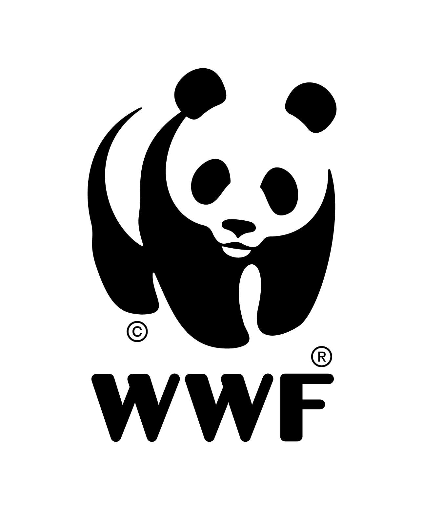

<!DOCTYPE html>
<html lang="en">
<head>
    <meta charset="UTF-8">
    <title>Document</title>
    <link rel="stylesheet" href="css/reset.css">
    <link rel="stylesheet" href="css/wwfjhh.css">
</head>
<body>
   <footer>
       <div class="footertop">
            <p>Get the latest conservation news with email</p>
           <input id="email" type="email" placeholder="wwf1234@gmail.com">
           <input id="agreement" type="radio">
           <span>수신동의 및 개인정보취급방침 동의</span>
           <div class="che"></div>
           <button>신청하기</button>
       </div>
       <div class="footerbottom">
          <div class="footermenu">
                          
                  <ul>
                         <li>WWF</li>
                      <li>기관소개</li>
                      <li>WWF역사</li>
                      <li>WWF한국지부</li>
                      <li>연례보고서</li>
                  </ul>
                  <ul>
                     <li>활동</li>
                      <li>글로벌 활동</li>
                      <li>국내 활동</li>
                  </ul>
                  <ul>
                     <li>참여</li>
                      <li>행사 참여</li>
                      <li>일상 참여</li>
                  </ul>
                  <ul>
                     <li>캠페인</li>
                      <li>멸종위기종보전</li>
                      <li>생태발자국 줄이기</li>
                      <li>Earth Hour</li>
                      <li>Our Planet</li>
                  </ul>
                  <ul>
                      <li>소식&amp;자료</li>
                      <li>모아보기</li>
                      <li>WWF보고서</li>
                      <li>WWF보도자료</li>
                      <li>WWF뉴스</li>
                      <li>판다메일</li>
                  </ul>
          </div>
          <div class="inquiry">
              <ul>
                  <li>후원문의</li>
                  <li>02-722-1601</li>
                  <li>members@wwfkorea.or.kr</li>
              </ul>
          </div>
           <div class="sns">
               
               
               
               
           </div>
           <div class="icon">
               
           </div>
           <div class="txttop">
               <p>사람과 자연의 조화, 우리가 만들어가는 미래입니다.</p>
               <ul>
                   <li>재단법인 한국세계자연기금</li>
                   <li>대표자 : 손성환</li>
                   <li>고유번호 : 101-82-23485</li>
                   <li>서울시 종로구 종로 28 서울글로벌센터 702호</li>
               </ul>
               <ul>
                   <li>후원 문의 members@wwfkorea.or.kr</li>
                   <li>기부/제휴 문의 partnership@wwfkorea.or.kr</li>
                   <li>PR문의 marketing@wwfkorea.or.kr</li>
                   <li>기타 문의 info@wwfkorea.or.kr</li>
                   <li>대표전화 : 02-722-1601</li>
               </ul>
           </div>
           <div class="txtbottom">
               <p>ⓒ 2019 WWF - World Wide Fund For Nature (also known as World Wildlife Fund). Creative Commons licence</p>
           </div>
       </div>
   </footer>
</body>
</html>